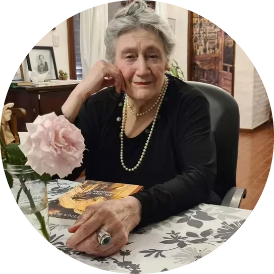

Cristina Bajo

Maestra de la novela histórica, sus libros te transportan a épocas pasadas con vívidos detalles y personajes inolvidables.

Carloz Ruiz Zafon

Creador de novelas cautivadoras que mezclan misterio, historia y pasión.
Vanessa Montfort
Tejedora de historias emotivas, donde los personajes cobran vida en tramas que exploran la profundidad del alma humana, sus luchas internas y sus vínculos con el pasado.